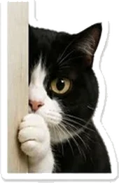

something I wanted to say properly
I read what you sent me.
Then I read it again.
no reply needed · take your time
if you want something playing while you read
I've been thinking about what you told me.
Not the polite kind of thinking. The kind where you read something three times because you really don't want to get it wrong.
You said that when something doesn't feel good to you, you don't explain it — you go quiet. And not only with the one person involved. With everyone. You said you just go far from it.
I understand that now. I didn't before, and I'm glad you told me instead of letting me keep guessing.
First — about what I said to you.
I told you I was worried I was coming across as creepy. Which means I took my own anxiety and handed it to you to carry, at the exact moment you were the one feeling uncomfortable. That was backwards, and I'm sorry.
And you answered anyway. You explained yourself instead of disappearing — which, going by everything you've since told me about how you work, probably cost you something.
I noticed that. Thank you.

You said you're annoying, and that nobody can handle you.
I don't think that's what actually happened to you.
I think you spent a long time talking to someone who took it lightly. And when you get taken lightly enough times, you stop blaming the person who wasn't listening. You start doing quiet math instead: if I say less, I'll be easier to keep.
That isn't being annoying. That's being tired.
Annoying and unheard feel identical from the inside.
They are not the same thing.
You said you were with someone, and still felt alone.
That's the line I keep coming back to.
Because it means the problem was never that nobody was nearby. Somebody was nearby. It's that nothing you said ever landed anywhere.
You'd put something down, and it just wouldn't get picked up. Do that for long enough and you stop putting things down at all. That's not a flaw in you. That's what anyone would learn.
So here's the only thing I'm actually offering.
Not I'll fix it. I can't fix it, and I'd be lying if I said I could.
Just this: you can talk, and I'll still be here at the end of it.
Say something random. Complain about the same thing for the fourth time. Send a paragraph at 2am and then "ignore that" at 2:05. Tell me something that sounds stupid out loud. Say a half-finished thing you haven't worked out yet.
You don't have to keep checking how much you've used up. There's no meter running, and I'm not keeping a tab of how much listening you owe me back. Listening isn't a loan. You're not in debt for it.

And going quiet is allowed.
This is the part I most want you to actually believe.
If you go quiet, I'm not going to decide what it means. I'm not going to text you three times until you explain yourself. I'm not going to make you pay for it later with a mood.
Quiet is a complete answer.
It doesn't need a sentence attached to it.
Take a day. Take a week. You don't owe me a reason, and you don't have to come back with an apology attached to the front of it.
I'm not saying any of this to get something.
You told me you don't like flirting that comes out of nowhere — that it mostly makes you think why is this necessary. That's fair, and I'm not doing that here.
This isn't a door I need you to walk through. It's just unlocked. You're allowed to leave it shut for as long as you want — and I'm not going to stand outside it waiting for you to notice how patient I'm being.
One last thing, and then I'll stop.
You don't have to be a smaller, quieter, easier version of yourself to be welcome here.
The full-size one already is.
take care of yourself,Saud
 There's one more page.
It's much less serious. You've earned it after all that.
There's one more page.
It's much less serious. You've earned it after all that.